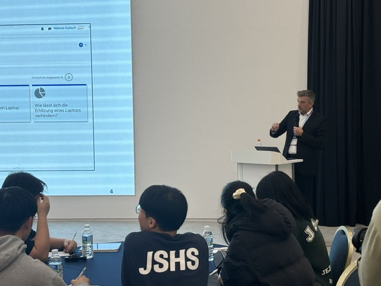
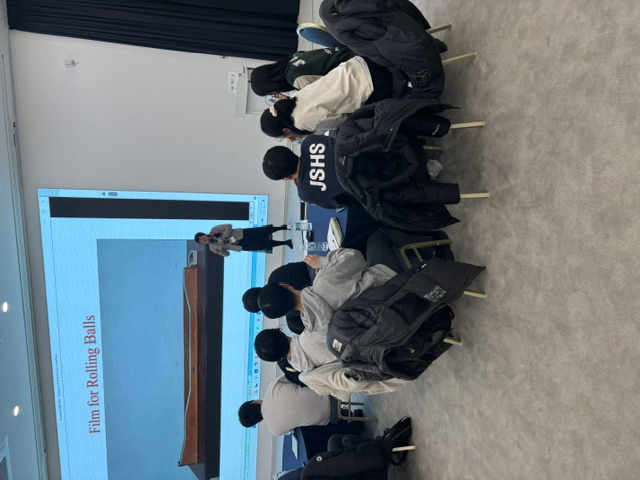
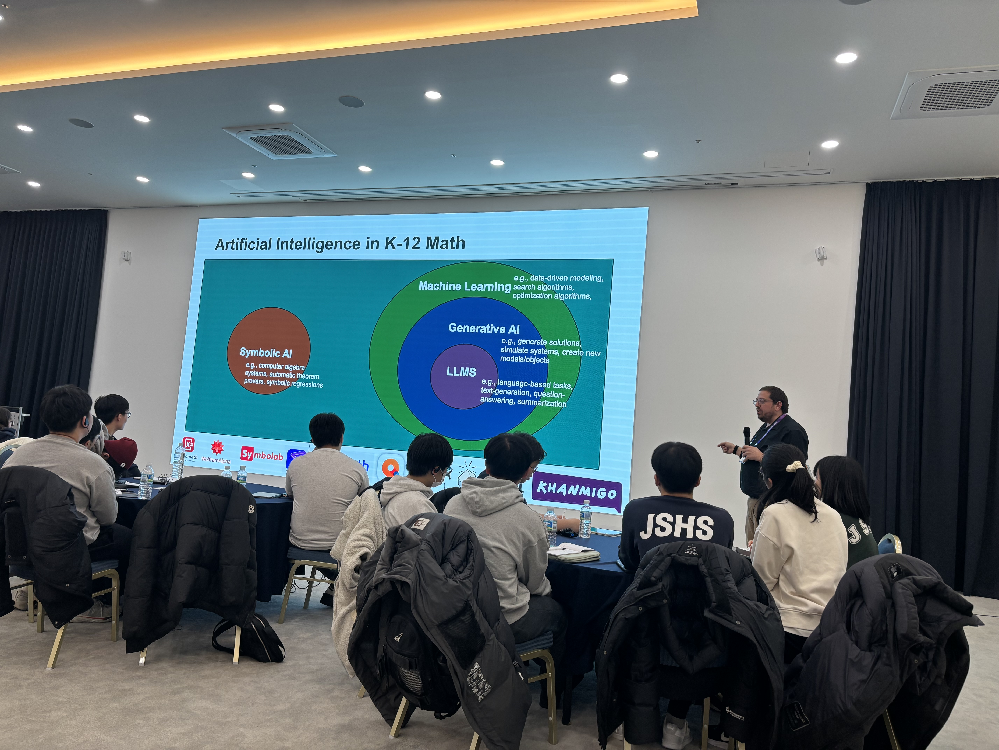
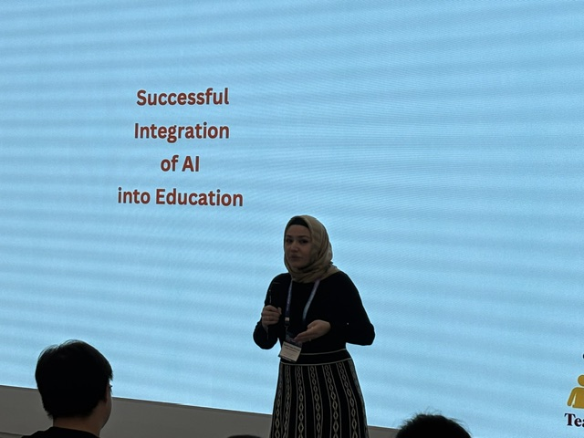
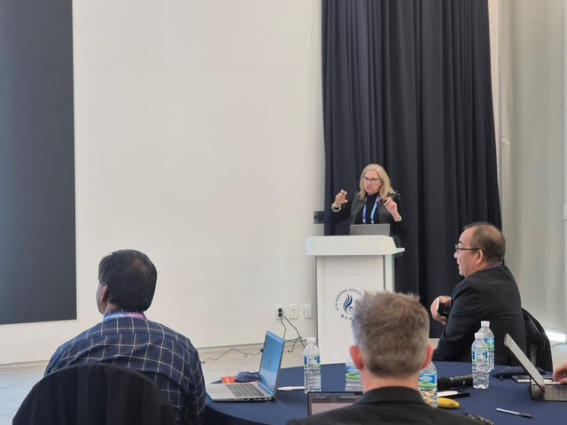

Session Overview
Four international speakers presented on AI in science and mathematics education. Topics included AI-based assessment systems, personalized learning platforms, and teacher professional development tools, followed by student discussion on AI usage and concerns.
Featured Speakers

Prof. Dr. Knut Neumann
IPN - Leibniz Institute for Science and Mathematics Education, Germany
AI-Powered Learning Analytics

Prof. Mei-Hung Chiu, Ed.D.
National Taiwan Normal University, Taiwan
AI in Science Assessment & Facial Expression Recognition

Alden Jack "AJ" Edson, Ph.D.
Michigan State University, USA
Connected Mathematics Project & AI Integration

Prof. Yasemin Copur-Gencturk, Ph.D.
University of Southern California, USA
AI-Based Teacher Professional Development

Prof. Janice Gobert, Ph.D.
Rutgers University & CEO of Inq-ITS, USA
Panel Respondent
Presentation Highlights
Prof. Knut Neumann - Two-Loop AI System for Science Education
Dr. Neumann presented work on AI-powered learning analytics for physics education. His research addresses challenges in science education:
- Problem Identification: Many students fail to reach basic science competence; curriculum lacks coherence and cumulative learning
- Solution: Digital learning environments with Evidence-Centered Design, using LLMs for automated student response analysis
- Innovation: Two-loop system - Inner loop (AI provides immediate student feedback) + Outer loop (alerts teacher at critical moments)
- Vision: Generic platform where teachers upload any worksheet and AI automatically tracks learning without requiring technical expertise
Prof. Mei-Hung Chiu - Facial Expression Recognition & AI Assessment
Prof. Chiu shared research on using AI to detect learning through student facial expressions:
- Key Finding: Surprise expressions correlate with conceptual change; repeated viewings show learning progression
- Counterintuitive Experiments: Boiling water with ice on top, falling ball trajectories - students' facial reactions reveal understanding
- AI Scoring with Gemini 2.0: Iterative rubric refinement improved accuracy from 0.55 to 0.74 for CER (Claim-Evidence-Reasoning) assessment
- Core Message: "AI is co-pilot, not pilot" - students and teachers must learn to ask good questions
AJ Edson - Connected Mathematics Project Digital Transformation
Author of CMP4, AJ presented 40 years of curriculum evolution and AI integration in mathematics education:
- Philosophy: Teaching mathematics THROUGH problem-solving, not FOR problem-solving
- Research Base: Most researched US math curriculum (550+ papers); field-tested in South Korea
- Digital Platform: $10M NSF-funded system enabling real-time collaboration and teacher monitoring
- AI Integration: Classifies student strategies (additive vs multiplicative reasoning), tracks growth over time, explains reasoning to students
- Key Principle: Must solve "Problems of Practice" - not technology for technology's sake
Prof. Yasemin Copur-Gencturk - Evidence-Based AI Professional Development
Prof. Copur-Gencturk presented AI-powered teacher professional development with RCT results:
- Design Philosophy: AI asks questions rather than giving answers; guides learning through practice
- Four AI Agents: Filter (relevance), Judge (evaluation), Responder (hints), Facilitator (safety net after 3 attempts)
- RCT Results: Three-level impact:
- Level 1: Teacher knowledge improved (PCK)
- Level 2: Teaching practice changed
- Level 3: Student achievement improved - nearly 1/4 grade level difference
- Critical Message: "Content experts must create meaningful AI tools" - domain knowledge is essential
Key Takeaways
"AI is co-pilot, not pilot. The quality of the question determines the quality of the answer." - Prof. Mei-Hung Chiu
"AI won't replace human. But humans who don't use AI will be replaced." - Panel Discussion
"Not technology for technology's sake - must genuinely solve Problems of Practice in the classroom." - AJ Edson
"We need content experts to create meaningful tools. Many AI tools forget the most important thing: domain-specific expertise." - Prof. Yasemin Copur-Gencturk
- Personalized Learning at Scale: All speakers emphasized AI enables 1-to-1 feedback while maintaining quality
- Teacher Support, Not Replacement: AI handles routine tasks, freeing teachers for critical moments
- Evidence-Based Approach: Rigorous evaluation (RCTs) validates effectiveness; document actual impact
- Cultural Context Matters: Privacy concerns, educational priorities, and adoption rates vary by country
Student Voice: AI Usage & Concerns
Jeju Science High School and Jeju National University students discussed AI in their education:
How Students Use AI
- Assignment and report writing (framework development, not full text generation)
- Coding support (error troubleshooting, syntax clarification)
- Research assistance (finding references, methodology decisions)
- Paper comprehension (summarization, translation)
- Exam preparation (problem generation with Gemini Quiz)
Student Concerns (Critical Thinking Demonstrated)
- Accuracy Issues: "We often spot errors in replies" - AI makes frequent mistakes
- Over-Reliance: Some students copy-paste without understanding, losing learning opportunities
- Plagiarism Detection Flaws: GPT detection unreliable - sometimes flags original work, misses AI content
- Verification Necessity: "Should cross-check if information is correct" - cannot blindly trust
Student Recommendations
"We shouldn't necessarily rely everything on AI. We should be skeptical as well. AI can have a good future if we use it as a guide." - Science High School Student
- Use AI as guide, not authority (like Google replacement)
- Know what you're doing before copying
- Create society where humans coexist with AI
- Need legal/ethical systems and regulatory frameworks
Research Impact & Future Directions
- Student Impact: Prof. Copur-Gencturk's RCT showed nearly 1/4 grade level difference from teacher-level intervention
- Scalability: Prof. Neumann proposed generic platforms requiring no technical expertise from teachers
- Evidence Standards: Speakers emphasized rigorous evaluation over marketing claims
- International Collaboration: Germany, Taiwan, USA, Turkey, and South Korea perspectives on complementary approaches
- Student Perspective: Students demonstrated critical thinking in AI evaluation
AI in Education
Learning Analytics
Teacher Professional Development
Mathematics Education
Science Assessment
Student Voice
Evidence-Based Research
International Collaboration
Read Full Summary Report (16,000 words) →